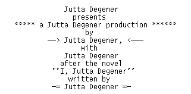

I can be e-mailed at frank@icce.rug.nl or, if your browser
supports it, using a
form.
Frank Brokken,
Jul, 06 1997

LINE Jutta, looks as if this obliges you to keep the feedback about the C++ guide coming! Or, in Jutta's own words:
Sometimes I wish everybody who's out on the web would have to take an oath first, something likeLINE ICONBAR LINE``I promise to not let the glitzy surface of my frontend blind me, to keep in mind that humans write these things (who like feedback as much as a person talking to me directly), and to complain and comment whenever something strikes me as odd. In other words, no, I won't be a passive consuming couch potato like all the other guys.''
The network manager then lifts his or her floppy with the latest Mosaic release on it and asks: ``Promise?''
To which the applicant replies ``Promise! Honest!''
The network manager then throws the applicant the floppy and mumbles ``Prove it!''
at which point the party starts.